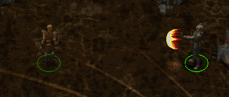
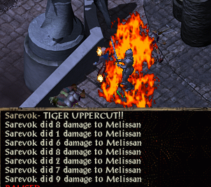

Sarevok's True Power
A mod for Baldur's Gate II: Throne of Bhaal
Version 0.3
Contact: jonalun@gmail.com
INTRODUCTION
INSTALLATION
ACTUAL INFO
VERSION HISTORY
> INTRODUCTION
This is a small mod to celebrate the release of... a certain game. And the return of my favourite character on the home system version, apparently. Yeah, it's random. Bite me.
A while back, I compared everyone's favourite glowy-eyed bald megalomaniac (that's Sarevok, for those of you not keeping track of these things) to a certain other semi-villainous bald individual. The mod... "draws inspiration from"... this idea. But while I could go into greater detail, I think I'll just let the screenshots do the talking.


They do a pretty good job at it, so this really shouldn't require more explanation.
> INSTALLATION
This is a mod for Baldur's Gate II: Throne of Bhaal. It will not work without the expansion.
To install the mod, unpack tiger.zip to your BGII directory. Unless you specified a different location on install, this is normally C:\Program Files\Black Isle\BGII - SoA\.
Next, run setup-TIGER.exe and follow the on-screen prompts.
To activate the mod content, simply recruit Sarevok and hang around the pocket plane for 10 seconds or so. There will be a brief event, after which you will notice Sarevok has gained a couple of extra abilities.
Should you wish to uninstall the mod, run setup-TIGER.exe a second time.
> ACTUAL INFO
...for those of you who are still wondering what the hell.
- "Tiger Shot" has range 50 and deals 2d8 crushing damage + 2d8 fire damage. You can use this as much as you like, once per round. However, there is a 5% chance that nothing will happen, which represent you somehow flubbing QCF+P.
- "Tiger Uppercut" has range 1 and hits 7 times, Alpha style (6 hits @ 1d8 crushing + 1 hit @ 2d8 fire). It has a 15% failure rate because sometimes your input only bears the slightest resemblance to F,D,DF+P. (Also, you can only use this move once every 4-5 rounds, since your thumbs will fall off if you try to perform such advanced stick-waggling too often. For your own good, you see.)
- Do not CTRL-R Sarevok during the "recharge" time after T.Upper or he may lose the ability permanently. (If you mess this up, you can set global JL#TIGER to 0 and wait a short while in the pocket plane, and the event should replay.)
- The Tiger Shot projectile and voice clips are ripped from a SNES SFII ROM. The hit animation is from Alpha.
> VERSION HISTORY
- Version 0.3 (10 May 2010): French language option added (translation by BohemianReader)
- Version 0.2 (20 April 2010): Russian language option added (translation by Austin)
- Version 0.1 (12 February 2009): initial release